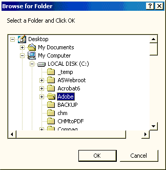

UI_BROWSE_FOR_FOLDER()
Syntax
Selected_Folder as C = UI_BROWSE_FOR_FOLDER( User_Prompt as C )
Argument | Description |
Selected_Folder | The folder selected by the operator. |
User_Prompt | Optional. Default = "". The prompt that appears below the window title. |
Description
The UI_BROWSE_FOR_FOLDER() function allows you to browse for a directory using the standard Windows browse utility.

Limitations
Desktop applications only.
Examples
? ui_browse_for_folder("Select a Folder and Click OK") = "C:\Adobe" |
See Also
Directory Functions, ((User Interaction _UI_ Functions|User Interaction (UI) Functions))